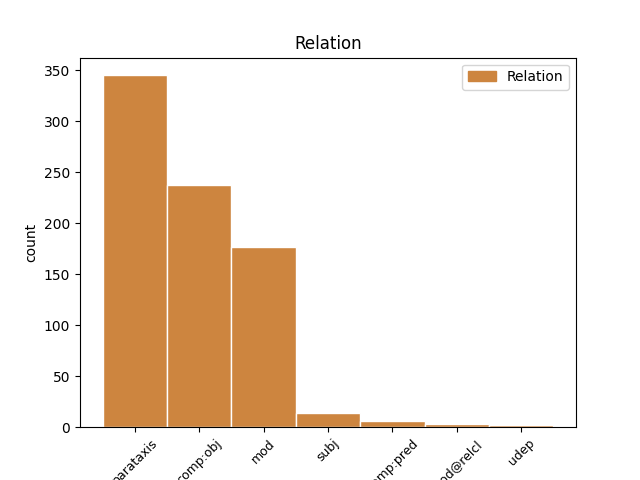
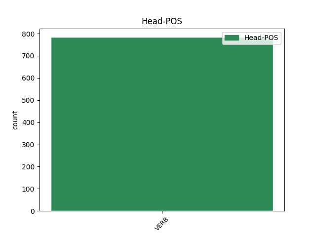
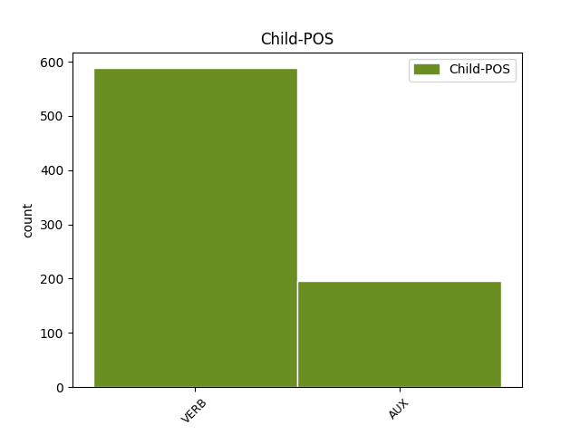

Distribution of features within this leaf



Agreement Rules sorted by frequency.
- When the dependent token is the parataxis(parataxis) of the head token, and the head token is VERB
1 « _ _ _ _ 0 _ _ _
2 Eu _ _ _ _ 0 _ _ _
3 torci torcer VERB _ Mood=Ind|Number=Sing|Person=1|Tense=Past|VerbForm=Fin 12 parataxis _ _
4 muito _ _ _ _ 0 _ _ _
5 por _ _ _ _ 0 _ _ _
6 você _ _ _ _ 0 _ _ _
7 , _ _ _ _ 0 _ _ _
8 viu _ _ _ _ 0 _ _ _
9 ? _ _ _ _ 0 _ _ _
10 » _ _ _ _ 0 _ _ _
11 , _ _ _ _ 0 _ _ _
12 disse dizer VERB _ Mood=Ind|Number=Sing|Person=3|Tense=Past|VerbForm=Fin 0 _ _ _
13 Itamar _ _ _ _ 0 _ _ _
14 a _ _ _ _ 0 _ _ _
15 Fu _ _ _ _ 0 _ _ _
16 . _ _ _ _ 0 _ _ _
1 PS _ _ _ _ 0 _ _ _
2 Milagre _ _ _ _ 0 _ _ _
3 mesmo _ _ _ _ 0 _ _ _
4 é _ _ _ _ 0 _ _ _
5 gente _ _ _ _ 0 _ _ _
6 como _ _ _ _ 0 _ _ _
7 João _ _ _ _ 0 _ _ _
8 Alves _ _ _ _ 0 _ _ _
9 trocar _ _ _ _ 0 _ _ _
10 a _ _ _ _ 0 _ _ _
11 leitura _ _ _ _ 0 _ _ _
12 de _ _ _ _ 0 _ _ _
13 volantes _ _ _ _ 0 _ _ _
14 de _ _ _ _ 0 _ _ _
15 loteria _ _ _ _ 0 _ _ _
16 por _ _ _ _ 0 _ _ _
17 a _ _ _ _ 0 _ _ _
18 Bíblia _ _ _ _ 0 _ _ _
19 quem _ _ _ _ 0 _ _ _
20 sabe saber VERB _ Mood=Ind|Number=Sing|Person=3|Tense=Pres|VerbForm=Fin 0 _ _ _
21 o _ _ _ _ 0 _ _ _
22 poder _ _ _ _ 0 _ _ _
23 público _ _ _ _ 0 _ _ _
24 não _ _ _ _ 0 _ _ _
25 o _ _ _ _ 0 _ _ _
26 ajuda ajudar VERB _ Mood=Ind|Number=Sing|Person=3|Tense=Pres|VerbForm=Fin 20 comp:obj _ SpaceAfter=No
27 , _ _ _ _ 0 _ _ _
28 dando _ _ _ _ 0 _ _ _
29 lhe _ _ _ _ 0 _ _ _
30 uma _ _ _ _ 0 _ _ _
31 cela _ _ _ _ 0 _ _ _
32 especial _ _ _ _ 0 _ _ _
33 para _ _ _ _ 0 _ _ _
34 aprofundar _ _ _ _ 0 _ _ _
35 tais _ _ _ _ 0 _ _ _
36 leituras _ _ _ _ 0 _ _ _
37 . _ _ _ _ 0 _ _ _
1 Notamos _ _ _ _ 0 _ _ _
2 ainda _ _ _ _ 0 _ _ _
3 que _ _ _ _ 0 _ _ _
4 , _ _ _ _ 0 _ _ _
5 quando _ _ _ _ 0 _ _ _
6 um _ _ _ _ 0 _ _ _
7 passageiro _ _ _ _ 0 _ _ _
8 brasileiro _ _ _ _ 0 _ _ _
9 se _ _ _ _ 0 _ _ _
10 inscreve inscrever VERB _ Mood=Ind|Number=Sing|Person=3|Tense=Pres|VerbForm=Fin 30 mod _ _
11 em _ _ _ _ 0 _ _ _
12 um _ _ _ _ 0 _ _ _
13 programa _ _ _ _ 0 _ _ _
14 de _ _ _ _ 0 _ _ _
15 milhagem _ _ _ _ 0 _ _ _
16 de _ _ _ _ 0 _ _ _
17 uma _ _ _ _ 0 _ _ _
18 companhia _ _ _ _ 0 _ _ _
19 aérea _ _ _ _ 0 _ _ _
20 internacional _ _ _ _ 0 _ _ _
21 que _ _ _ _ 0 _ _ _
22 serve _ _ _ _ 0 _ _ _
23 o _ _ _ _ 0 _ _ _
24 Brasil _ _ _ _ 0 _ _ _
25 , _ _ _ _ 0 _ _ _
26 passados _ _ _ _ 0 _ _ _
27 30 _ _ _ _ 0 _ _ _
28 dias _ _ _ _ 0 _ _ _
29 , _ _ _ _ 0 _ _ _
30 recebe receber VERB _ Mood=Ind|Number=Sing|Person=3|Tense=Pres|VerbForm=Fin 0 _ _ _
31 a _ _ _ _ 0 _ _ _
32 proposta _ _ _ _ 0 _ _ _
33 de _ _ _ _ 0 _ _ _
34 a _ _ _ _ 0 _ _ _
35 Iapa _ _ _ _ 0 _ _ _
36 . _ _ _ _ 0 _ _ _
1 Seleção _ _ _ _ 0 _ _ _
2 é _ _ _ _ 0 _ _ _
3 isso _ _ _ _ 0 _ _ _
4 , _ _ _ _ 0 _ _ _
5 joga jogar VERB _ Mood=Ind|Number=Sing|Person=3|Tense=Pres|VerbForm=Fin 0 _ _ _
6 quem _ _ _ _ 0 _ _ _
7 está estar AUX _ Mood=Ind|Number=Sing|Person=3|Tense=Pres|VerbForm=Fin 5 subj _ _
8 melhor _ _ _ _ 0 _ _ _
9 , _ _ _ _ 0 _ _ _
10 não _ _ _ _ 0 _ _ _
11 tem _ _ _ _ 0 _ _ _
12 esse _ _ _ _ 0 _ _ _
13 negócio _ _ _ _ 0 _ _ _
14 de _ _ _ _ 0 _ _ _
15 nome _ _ _ _ 0 _ _ _
16 . _ _ _ _ 0 _ _ _
1 Que _ _ _ _ 0 _ _ _
2 a _ _ _ _ 0 _ _ _
3 democracia _ _ _ _ 0 _ _ _
4 contemporânea _ _ _ _ 0 _ _ _
5 é _ _ _ _ 0 _ _ _
6 fortemente _ _ _ _ 0 _ _ _
7 corporativa _ _ _ _ 0 _ _ _
8 o _ _ _ _ 0 _ _ _
9 sabemos _ _ _ _ 0 _ _ _
10 , _ _ _ _ 0 _ _ _
11 mas _ _ _ _ 0 _ _ _
12 esperamos esperar VERB _ Mood=Ind|Number=Plur|Person=1|Tense=Pres|VerbForm=Fin 0 _ _ _
13 que _ _ _ _ 0 _ _ _
14 não _ _ _ _ 0 _ _ _
15 continue continuar VERB _ Mood=Sub|Number=Sing|Person=3|Tense=Pres|VerbForm=Fin 12 comp:pred _ MWE=continue_a|MWEPOS=AUX
16 a _ _ _ _ 0 _ _ _
17 ser _ _ _ _ 0 _ _ _
18 tão _ _ _ _ 0 _ _ _
19 cheia _ _ _ _ 0 _ _ _
20 de _ _ _ _ 0 _ _ _
21 particularismos _ _ _ _ 0 _ _ _
22 ! _ _ _ _ 0 _ _ _
1 O _ _ _ _ 0 _ _ _
2 República _ _ _ _ 0 _ _ _
3 de _ _ _ _ 0 _ _ _
4 a _ _ _ _ 0 _ _ _
5 Irlanda _ _ _ _ 0 _ _ _
6 - _ _ _ _ 0 _ _ _
7 Espanha _ _ _ _ 0 _ _ _
8 de _ _ _ _ 0 _ _ _
9 hoje _ _ _ _ 0 _ _ _
10 já _ _ _ _ 0 _ _ _
11 ajudará _ _ _ _ 0 _ _ _
12 a _ _ _ _ 0 _ _ _
13 definir _ _ _ _ 0 _ _ _
14 posições _ _ _ _ 0 _ _ _
15 , _ _ _ _ 0 _ _ _
16 mas _ _ _ _ 0 _ _ _
17 deverá dever VERB _ Mood=Ind|Number=Sing|Person=3|Tense=Fut|VerbForm=Fin 0 _ _ _
18 ser _ _ _ _ 0 _ _ _
19 o _ _ _ _ 0 _ _ _
20 Espanha _ _ _ _ 0 _ _ _
21 - _ _ _ _ 0 _ _ _
22 Dinamarca _ _ _ _ 0 _ _ _
23 de _ _ _ _ 0 _ _ _
24 17 _ _ _ _ 0 _ _ _
25 de _ _ _ _ 0 _ _ _
26 Novembro _ _ _ _ 0 _ _ _
27 que _ _ _ _ 0 _ _ _
28 tudo _ _ _ _ 0 _ _ _
29 esclarecerá esclarecer VERB _ Mood=Ind|Number=Sing|Person=3|Tense=Fut|VerbForm=Fin 17 mod@relcl _ SpaceAfter=No
30 . _ _ _ _ 0 _ _ _
Disagree Examples:
1 « _ _ _ _ 0 _ _ _
2 Encomendem _ _ _ _ 0 _ _ _
3 nos _ _ _ _ 0 _ _ _
4 a _ _ _ _ 0 _ _ _
5 projectistas _ _ _ _ 0 _ _ _
6 de _ _ _ _ 0 _ _ _
7 fora _ _ _ _ 0 _ _ _
8 » _ _ _ _ 0 _ _ _
9 porque _ _ _ _ 0 _ _ _
10 , _ _ _ _ 0 _ _ _
11 se _ _ _ _ 0 _ _ _
12 as _ _ _ _ 0 _ _ _
13 obras _ _ _ _ 0 _ _ _
14 vierem vir VERB _ Mood=Sub|Number=Plur|Person=3|Tense=Fut|VerbForm=Fin 21 mod _ MWE=vierem_a|MWEPOS=AUX
15 a _ _ _ _ 0 _ _ _
16 ser _ _ _ _ 0 _ _ _
17 financiadas _ _ _ _ 0 _ _ _
18 , _ _ _ _ 0 _ _ _
19 eles _ _ _ _ 0 _ _ _
20 até _ _ _ _ 0 _ _ _
21 saem sair VERB _ Mood=Ind|Number=Plur|Person=3|Tense=Pres|VerbForm=Fin 0 _ _ _
22 de _ _ _ _ 0 _ _ _
23 graça _ _ _ _ 0 _ _ _
24 , _ _ _ _ 0 _ _ _
25 já _ _ _ _ 0 _ _ _
26 que _ _ _ _ 0 _ _ _
27 , _ _ _ _ 0 _ _ _
28 em _ _ _ _ 0 _ _ _
29 esse _ _ _ _ 0 _ _ _
30 caso _ _ _ _ 0 _ _ _
31 , _ _ _ _ 0 _ _ _
32 « _ _ _ _ 0 _ _ _
33 os _ _ _ _ 0 _ _ _
34 fundos _ _ _ _ 0 _ _ _
35 comunitários _ _ _ _ 0 _ _ _
36 pagam _ _ _ _ 0 _ _ _
37 os _ _ _ _ 0 _ _ _
38 projectos _ _ _ _ 0 _ _ _
39 , _ _ _ _ 0 _ _ _
40 o _ _ _ _ 0 _ _ _
41 mesmo _ _ _ _ 0 _ _ _
42 não _ _ _ _ 0 _ _ _
43 acontecendo _ _ _ _ 0 _ _ _
44 quando _ _ _ _ 0 _ _ _
45 eles _ _ _ _ 0 _ _ _
46 são _ _ _ _ 0 _ _ _
47 feitos _ _ _ _ 0 _ _ _
48 por _ _ _ _ 0 _ _ _
49 os _ _ _ _ 0 _ _ _
50 GAT _ _ _ _ 0 _ _ _
51 » _ _ _ _ 0 _ _ _
52 , _ _ _ _ 0 _ _ _
53 dado _ _ _ _ 0 _ _ _
54 serem _ _ _ _ 0 _ _ _
55 organismos _ _ _ _ 0 _ _ _
56 de _ _ _ _ 0 _ _ _
57 o _ _ _ _ 0 _ _ _
58 Estado _ _ _ _ 0 _ _ _
59 . _ _ _ _ 0 _ _ _
1 « _ _ _ _ 0 _ _ _
2 Estamos estar VERB _ Mood=Ind|Number=Plur|Person=1|Tense=Pres|VerbForm=Fin 12 comp:obj _ MWE=Estamos_a|MWEPOS=AUX
3 a _ _ _ _ 0 _ _ _
4 dotar _ _ _ _ 0 _ _ _
5 os _ _ _ _ 0 _ _ _
6 computadores _ _ _ _ 0 _ _ _
7 de _ _ _ _ 0 _ _ _
8 um _ _ _ _ 0 _ _ _
9 novo _ _ _ _ 0 _ _ _
10 sentido _ _ _ _ 0 _ _ _
11 » _ _ _ _ 0 _ _ _
12 disse dizer VERB _ Mood=Ind|Number=Sing|Person=3|Tense=Past|VerbForm=Fin 0 _ _ _
13 Steve _ _ _ _ 0 _ _ _
14 d' _ _ _ _ 0 _ _ _
15 Averio _ _ _ _ 0 _ _ _
16 , _ _ _ _ 0 _ _ _
17 director _ _ _ _ 0 _ _ _
18 de _ _ _ _ 0 _ _ _
19 marketing _ _ _ _ 0 _ _ _
20 para _ _ _ _ 0 _ _ _
21 a _ _ _ _ 0 _ _ _
22 Europa _ _ _ _ 0 _ _ _
23 de _ _ _ _ 0 _ _ _
24 a _ _ _ _ 0 _ _ _
25 Logitech _ _ _ _ 0 _ _ _
26 . _ _ _ _ 0 _ _ _
1 « _ _ _ _ 0 _ _ _
2 Não _ _ _ _ 0 _ _ _
3 estou estar VERB _ Mood=Ind|Number=Sing|Person=1|Tense=Pres|VerbForm=Fin 21 comp:obj _ MWE=estou_a|MWEPOS=AUX
4 a _ _ _ _ 0 _ _ _
5 ver _ _ _ _ 0 _ _ _
6 que _ _ _ _ 0 _ _ _
7 , _ _ _ _ 0 _ _ _
8 para _ _ _ _ 0 _ _ _
9 emitir _ _ _ _ 0 _ _ _
10 uma _ _ _ _ 0 _ _ _
11 opinião _ _ _ _ 0 _ _ _
12 , _ _ _ _ 0 _ _ _
13 nós _ _ _ _ 0 _ _ _
14 tivéssemos _ _ _ _ 0 _ _ _
15 de _ _ _ _ 0 _ _ _
16 informar _ _ _ _ 0 _ _ _
17 previamente _ _ _ _ 0 _ _ _
18 o _ _ _ _ 0 _ _ _
19 ministro _ _ _ _ 0 _ _ _
20 , _ _ _ _ 0 _ _ _
21 afirmou afirmar VERB _ Mood=Ind|Number=Sing|Person=3|Tense=Past|VerbForm=Fin 0 _ _ _
22 . _ _ _ _ 0 _ _ _
1 « _ _ _ _ 0 _ _ _
2 A _ _ _ _ 0 _ _ _
3 proposta _ _ _ _ 0 _ _ _
4 é ser AUX _ Mood=Ind|Number=Sing|Person=3|Tense=Pres|VerbForm=Fin 28 parataxis _ _
5 muito _ _ _ _ 0 _ _ _
6 bem _ _ _ _ 0 _ _ _
7 vista _ _ _ _ 0 _ _ _
8 , _ _ _ _ 0 _ _ _
9 porque _ _ _ _ 0 _ _ _
10 será _ _ _ _ 0 _ _ _
11 mais _ _ _ _ 0 _ _ _
12 vantajosa _ _ _ _ 0 _ _ _
13 de _ _ _ _ 0 _ _ _
14 o _ _ _ _ 0 _ _ _
15 que _ _ _ _ 0 _ _ _
16 se _ _ _ _ 0 _ _ _
17 houver _ _ _ _ 0 _ _ _
18 só _ _ _ _ 0 _ _ _
19 um _ _ _ _ 0 _ _ _
20 pólo _ _ _ _ 0 _ _ _
21 de _ _ _ _ 0 _ _ _
22 interesse _ _ _ _ 0 _ _ _
23 em _ _ _ _ 0 _ _ _
24 o _ _ _ _ 0 _ _ _
25 local _ _ _ _ 0 _ _ _
26 » _ _ _ _ 0 _ _ _
27 , _ _ _ _ 0 _ _ _
28 afirmou afirmar VERB _ Mood=Ind|Number=Sing|Person=3|Tense=Past|VerbForm=Fin 0 _ _ _
29 o _ _ _ _ 0 _ _ _
30 major _ _ _ _ 0 _ _ _
31 Carlos _ _ _ _ 0 _ _ _
32 Barbosa _ _ _ _ 0 _ _ _
33 , _ _ _ _ 0 _ _ _
34 de _ _ _ _ 0 _ _ _
35 as _ _ _ _ 0 _ _ _
36 relações _ _ _ _ 0 _ _ _
37 públicas _ _ _ _ 0 _ _ _
38 de _ _ _ _ 0 _ _ _
39 a _ _ _ _ 0 _ _ _
40 Força _ _ _ _ 0 _ _ _
41 Aérea _ _ _ _ 0 _ _ _
42 , _ _ _ _ 0 _ _ _
43 admitindo _ _ _ _ 0 _ _ _
44 que _ _ _ _ 0 _ _ _
45 , _ _ _ _ 0 _ _ _
46 com _ _ _ _ 0 _ _ _
47 o _ _ _ _ 0 _ _ _
48 parque _ _ _ _ 0 _ _ _
49 temático _ _ _ _ 0 _ _ _
50 , _ _ _ _ 0 _ _ _
51 « _ _ _ _ 0 _ _ _
52 se _ _ _ _ 0 _ _ _
53 o _ _ _ _ 0 _ _ _
54 interesse _ _ _ _ 0 _ _ _
55 for _ _ _ _ 0 _ _ _
56 diversificado _ _ _ _ 0 _ _ _
57 , _ _ _ _ 0 _ _ _
58 toda _ _ _ _ 0 _ _ _
59 a _ _ _ _ 0 _ _ _
60 gente _ _ _ _ 0 _ _ _
61 fica _ _ _ _ 0 _ _ _
62 a _ _ _ _ 0 _ _ _
63 ganhar _ _ _ _ 0 _ _ _
64 » _ _ _ _ 0 _ _ _
65 . _ _ _ _ 0 _ _ _
1 Este _ _ _ _ 0 _ _ _
2 crescimento _ _ _ _ 0 _ _ _
3 « _ _ _ _ 0 _ _ _
4 resulta resultar VERB _ Mood=Ind|Number=Sing|Person=3|Tense=Pres|VerbForm=Fin 34 parataxis _ _
5 de _ _ _ _ 0 _ _ _
6 a _ _ _ _ 0 _ _ _
7 opção _ _ _ _ 0 _ _ _
8 de _ _ _ _ 0 _ _ _
9 alargar _ _ _ _ 0 _ _ _
10 o _ _ _ _ 0 _ _ _
11 número _ _ _ _ 0 _ _ _
12 de _ _ _ _ 0 _ _ _
13 projectos-piloto _ _ _ _ 0 _ _ _
14 , _ _ _ _ 0 _ _ _
15 de _ _ _ _ 0 _ _ _
16 modo _ _ _ _ 0 _ _ _
17 a _ _ _ _ 0 _ _ _
18 cobrir _ _ _ _ 0 _ _ _
19 uma _ _ _ _ 0 _ _ _
20 parte _ _ _ _ 0 _ _ _
21 de _ _ _ _ 0 _ _ _
22 o _ _ _ _ 0 _ _ _
23 território _ _ _ _ 0 _ _ _
24 nacional _ _ _ _ 0 _ _ _
25 até _ _ _ _ 0 _ _ _
26 a _ _ _ _ 0 _ _ _
27 o _ _ _ _ 0 _ _ _
28 dia _ _ _ _ 0 _ _ _
29 1 _ _ _ _ 0 _ _ _
30 de _ _ _ _ 0 _ _ _
31 Julho _ _ _ _ 0 _ _ _
32 » _ _ _ _ 0 _ _ _
33 , _ _ _ _ 0 _ _ _
34 referiu referir VERB _ Mood=Ind|Number=Sing|Person=3|Tense=Past|VerbForm=Fin 0 _ _ _
35 a _ _ _ _ 0 _ _ _
36 o _ _ _ _ 0 _ _ _
37 PÚBLICO _ _ _ _ 0 _ _ _
38 o _ _ _ _ 0 _ _ _
39 presidente _ _ _ _ 0 _ _ _
40 de _ _ _ _ 0 _ _ _
41 a _ _ _ _ 0 _ _ _
42 Comissão _ _ _ _ 0 _ _ _
43 Nacional _ _ _ _ 0 _ _ _
44 de _ _ _ _ 0 _ _ _
45 o _ _ _ _ 0 _ _ _
46 RMG _ _ _ _ 0 _ _ _
47 , _ _ _ _ 0 _ _ _
48 Paulo _ _ _ _ 0 _ _ _
49 Pedroso _ _ _ _ 0 _ _ _
50 . _ _ _ _ 0 _ _ _